Impact de l’information (Q1 avant vs Q2 après)
1 Introduction
1.1 Objectif
Objectif principal : évaluer l’impact d’une information sur les connaissances des risques de l’alcool pendant la grossesse, en comparant le score global avant (Q1) et après (Q2) information, chez les mêmes participantes.
Objectifs secondaires : décrire (i) la proportion de participantes ayant un gain >= 3 points, (ii) l’évolution individuelle (spaghetti), (iii) les évolutions par question, et (iv) l’hétérogénéité des scores/gains selon l’âge (exploratoire).
1.2 Méthodes
NoteApproche méthodologique en résumé
Il s’agit d’une étude avant–après visant à mesurer l’évolution des connaissances des participantes suite à une intervention d’information. La même population a répondu à un questionnaire avant (Q1) puis après (Q2).
L’analyse repose sur la comparaison des scores Q1 et Q2 chez des patientes appairées, ce qui est la méthode la plus fiable pour mesurer un changement.
En l’absence de critère d’indentification unique, l’appariement a été réalisé via des identifiants partiels (âge et commune de résidence), puis validé manuellement. Seules les paires complètes (Q1 et Q2) ont été retenues pour l’analyse principale.
- Tests statistiques : On utilise le test t apparié pour vérifier que l’amélioration n’est pas due au hasard. Une méthode de bootstrap permet de réaliser un test t sans présupposer de normalité des données.
- Quantification de l’effet : On calcule le gain moyen et son intervalle de confiance à 95% pour connaître la taille de l’amélioration et sa plage de valeurs plausibles. Le bootstrap valide ces résultats sans présupposer de la normalité des données.
- Pertinence et effet plafond : On analyse la proportion de participantes avec un gain >= 3 points et on utilise une régression logistique pour comprendre comment la probabilité d’un “gros gain” diminue quand le score de départ est déjà élevé.
- Analyses exploratoires : On regarde ensuite les différences par âge et par question pour affiner la compréhension.
Il s’agit d’une étude avant–après à données appariées évaluant l’impact d’une information sur les connaissances des participantes sur les risques de l’alcool pendant la grossesse, mesurées par deux passations d’un questionnaire (Q1 avant, Q2 après).
L’appariement des patientes a été réalisé via des identifiants partiels (âge et commune de résidence), puis validé manuellement. Seules les paires complètes ont été retenues pour l’analyse principale. Le critère de jugement principal est le score global, recalculé à partir des réponses à l’aide d’une clé de correction et d’un barème prédéfinis : les points des 8 questions sont sommés (total /40), puis divisés par 2 pour obtenir une note sur 20. Pour les questions à réponses multiples, un point est attribué à chaque proposition correcte selon le barème ; aucune pénalité n’est appliquée en cas de réponses supplémentaires non attendues. Les scores par question (en points, de 0 au maximum de la question) et le gain individuel (Q2 − Q1) ont également été calculés ; pour comparer des questions de barèmes différents, les gains ont aussi été exprimés en pourcentage du barème.
Les variables quantitatives sont décrites par moyenne ± écart-type (et médiane [IQR] lorsque pertinent) et les variables qualitatives par effectif et pourcentage. L’effet global de l’intervention sur le score global a été évalué en comparant Q1 et Q2 au sein des mêmes participantes, à l’aide d’un test t apparié (Student), dans le sens “après > avant”, en appliquant une procédure de bootstrap (1000 réplications) pour s’affranchir de l’hypothèse de normalité des données. La pertinence clinique a été décrite en (i) comparant le gain moyen au seuil de 3 points et (ii) calculant la proportion de participantes atteignant un gain >= 3 points (avec intervalle de confiance binomial). Un test de signe (binomial) a également été utilisé pour comparer la fréquence des améliorations (gain > 0) à celle des diminutions (gain < 0), en ignorant les égalités. Enfin, une analyse exploratoire a estimé la probabilité d’un gain >= 3 points en fonction du score initial, de l’âge (approché en années) et de la langue du questionnaire (français vs créole), via une régression logistique multivariable.
Des analyses exploratoires ont étudié l’hétérogénéité des scores initiaux et des gains selon la tranche d’âge (tests de Kruskal–Wallis et modèle linéaire ajusté sur le score initial). Enfin, des analyses par question ont comparé les scores avant/après (tests appariés) et décrit les distributions de scores en points (proportions avec intervalles de confiance de Wilson), avec des tests de McNemar par niveau de score (p < 0,05). Ces analyses “par question” sont présentées à titre exploratoire, sans correction de multiplicité. Toutes les analyses ont été conduites sous R 4.5.2, avec un seuil de significativité de 5% (alpha = 0,05) et des intervalles de confiance à 95%.
2 Données et préparation
2.1 Données
Ce rapport utilise le fichier apparié Q1_Q2_apparie.csv (1 ligne = 1 participante du Q1, appariée à une ligne du Q2 quand possible).
2.2 Préparation des scores
3 Description
Pour visualiser la portée de l’étude, la carte suivante montre la répartition des participantes sur l’île de La Réunion. Chaque commune est représentée par un marqueur, dont la couleur et la taille reflètent le nombre de répondantes.
3.1 Langue des questionnaires (français vs créole)

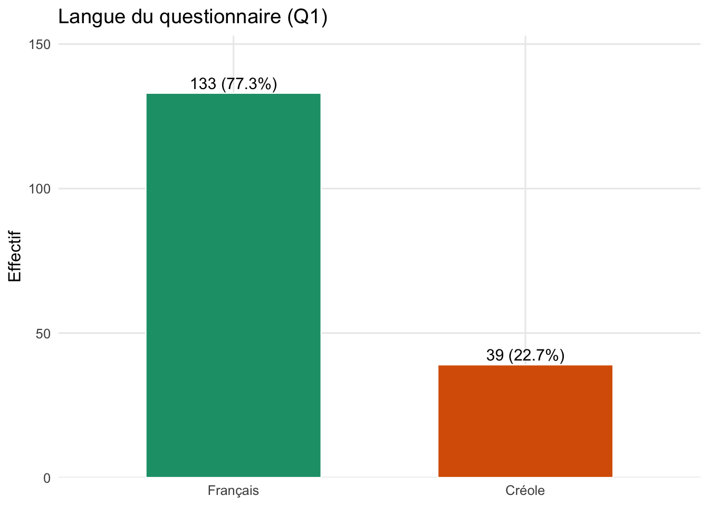


3.2 Appariement
| Indicateur | Effectif |
|---|---|
| Répondantes Q1 (total) | 172 |
| Réponses Q2 (total) | 106 |
| Paires Q1–Q2 (appariées) | 103 |
| Q1 non appariées | 69 |
3.3 Proportion d’appariement (Q1 → Q2)
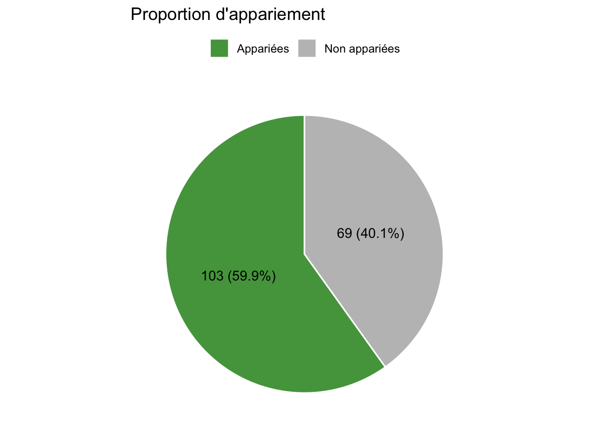

Ici, 103/172 réponses du Q1 sont appariées (soit 59.9%), et l’on retrouve 103/106 réponses du Q2 (soit 97.2%).
L’analyse principale avant–après porte sur l’échantillon “Appariées”.
3.4 Schéma de flux (effectifs)
| Étape | Effectif | Proportion |
|---|---|---|
| Q1 (total) | 172 | 100% |
| Q2 (total, non apparié) | 106 | — |
| Paires Q1–Q2 (analysées) | 103 | 59.9% |
| Q1 non appariées (perdues au Q2) | 69 | 40.1% |

Interprétation : Même interprétaion que le camembert précédent. Des patientes qui ont répondu au 2ème questionnaire, 103/106 réponses ont été appariées (soit 97.2%).
3.5 Attrition selon l’âge (Q1 appariées vs Q1 non appariées)
= Y a-t-il plus de pertes au suivi (Q2 manquant) dans certaines tranches d’âge ?
Via un test du chi2 d’indépendance entre la tranche d’âge et le statut d’appariement (Q1 avec ou sans Q2) : p-value > 0.9 donc pas d’impact évident de l’âge sur l’attrition.
Visuellement : pas d’impact de l’âge sur l’attrition non plus.
Graphique pas obligatoire : en gros y a pas de différence des “perdus de vue” selon l’âge.

Même graphique mais avec les effectifs en ordonnées :

4 Résultats principaux
4.1 Résultats clés (lecture rapide)
| Synthèse des résultats clés | ||||
| Sur 103 participantes appariées | ||||
| n (paires) | Moyenne Q1 (/20) | Moyenne Q2 (/20) | Gain moyen (Q2−Q1) | Proportion gain >= 3 |
|---|---|---|---|---|
| 103 | 15.3 | 18.2 | 3.0 | 48.5% |
Le gain moyen entre les groupes Q1 et Q2 (appariées) est à 2,97 points, et la proportion de participantes avec un gain >= 3 points est de 48.5%.
4.2 Appariement et population analysée
| Analyse | n | Gain moyen | IC95% gain | p t-test (bilatéral) |
|---|---|---|---|---|
| Principale (toutes paires) | 103 | 2.97 | [2.13 ; 3.81] | < 1e-4 |
| Sensibilité (sans discordance) | 102 | 2.92 | [2.08 ; 3.76] | < 1e-4 |
4.3 Impact global sur le score
4.3.1 Résumé visuel des résultats clés
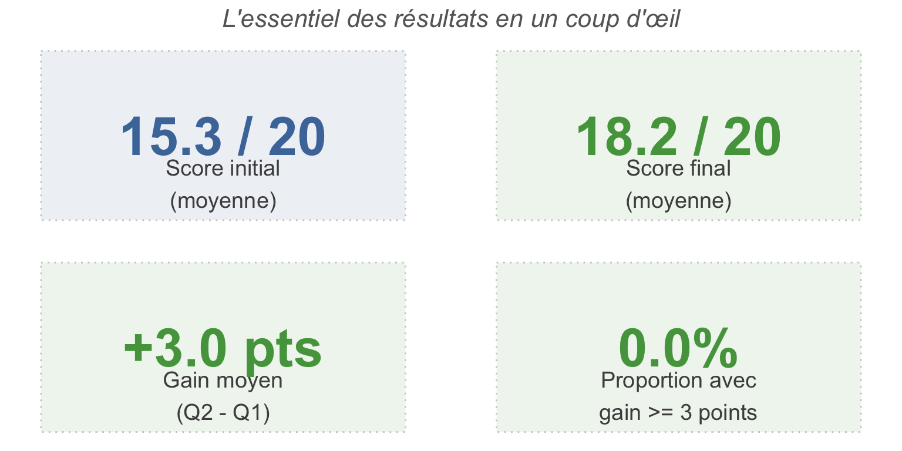
4.3.2 Données longues (pour graphiques)
4.4 Comparaison des moyennes (table)
| Mesure | Participants appariés1 |
|---|---|
| score_pre | 15.26 ± 3.77 |
| score_post | 18.22 ± 2.05 |
| score_diff | 2.97 ± 4.29 |
| 1 Mean ± SD | |
Interprétation (table des moyennes) : la ligne score_diff résume directement l’effet moyen de l’intervention (gain = Q2 - Q1). L’écart-type informe sur l’hétérogénéité des réponses individuelles.
4.5 Distribution des scores initiaux (Q1)

Interprétation : cet histogramme décrit le niveau de connaissances initial global et permet d’apprécier la dispersion, ainsi qu’un éventuel effet plafond si de nombreux scores sont proches de 20.
4.5.1 Boxplots côte à côte (score global)
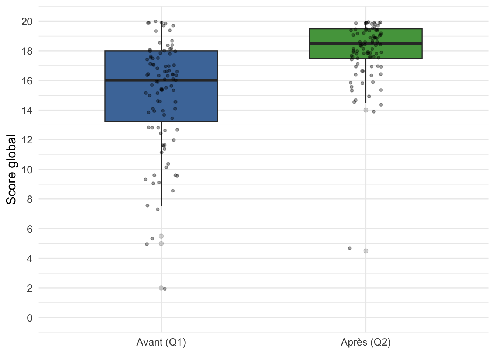
Interprétation (boxplots) : on observe un déplacement global vers des scores plus élevés après l’information. La médiane passe de 16 (Q1) à 18.5 (Q2), et l’intervalle interquartile se déplace dans le même sens.
4.5.2 Visualisation des trajectoires individuelles
Les graphiques suivants (diagrammes “spaghetti”, nuages de points, ou “waterfall”) ont tous pour but de dépasser l’analyse de la moyenne pour explorer la dynamique des changements individuels. Ils permettent de répondre à des questions comme : “La majorité des participantes a-t-elle progressé ?”, “Y a-t-il des personnes pour qui le score a baissé ?”, “Les gains sont-ils homogènes ou très variables ?”. Chaque graphique raconte la même histoire, mais sous un angle différent et complémentaire.
4.5.3 Diagramme spaghetti (évolution individuelle)

Interprétation (spaghetti) : la majorité des trajectoires individuelles monte (gain > 0 : 70 participantes), avec 19 baisses et 14 stabilités. La tendance moyenne est à l’augmentation entre Q1 et Q2.
Ce graphique raconte aussi l’histoire de chaque participante. Chaque ligne grise fine représente la trajectoire d’une personne, et la ligne noire épaisse la tendance moyenne du groupe. On voit que la grande majorité des lignes montent, ce qui suggère un effet positif global de l’intervention, qui va maintenant être formalisé par les tests statistiques.
4.5.4 Diagramme spaghetti coloré (par direction du gain)
Ce graphique reprend le diagramme spaghetti ci-dessus, mais chaque trajectoire est colorée selon la direction du changement : vert pour les améliorations, rouge pour les diminutions, gris pour les stabilités.
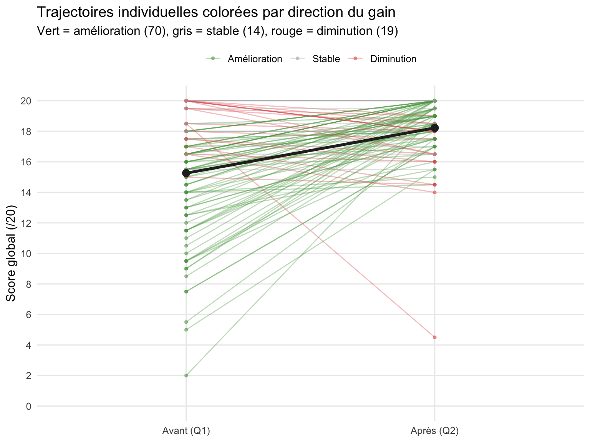
4.5.5 Nuage de points Q1 vs Q2 (appariés)
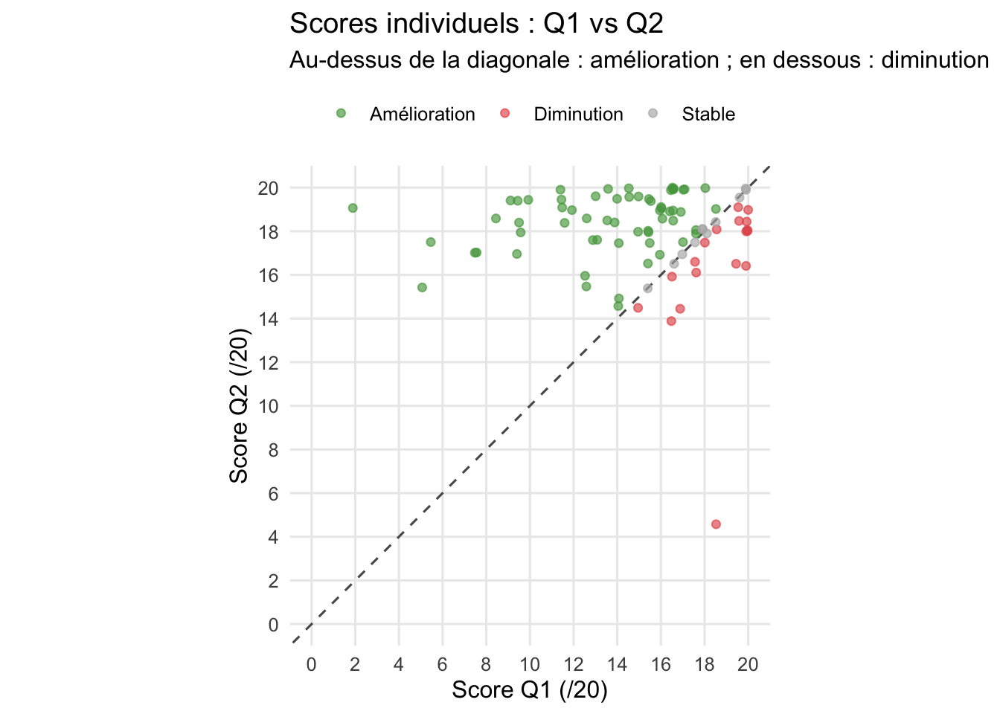
Interprétation : ce graphique visualise directement l’évolution individuelle. Si la majorité des points est au-dessus de la diagonale, l’amélioration est majoritaire.
4.5.6 Waterfall plot des gains (Q2 − Q1)
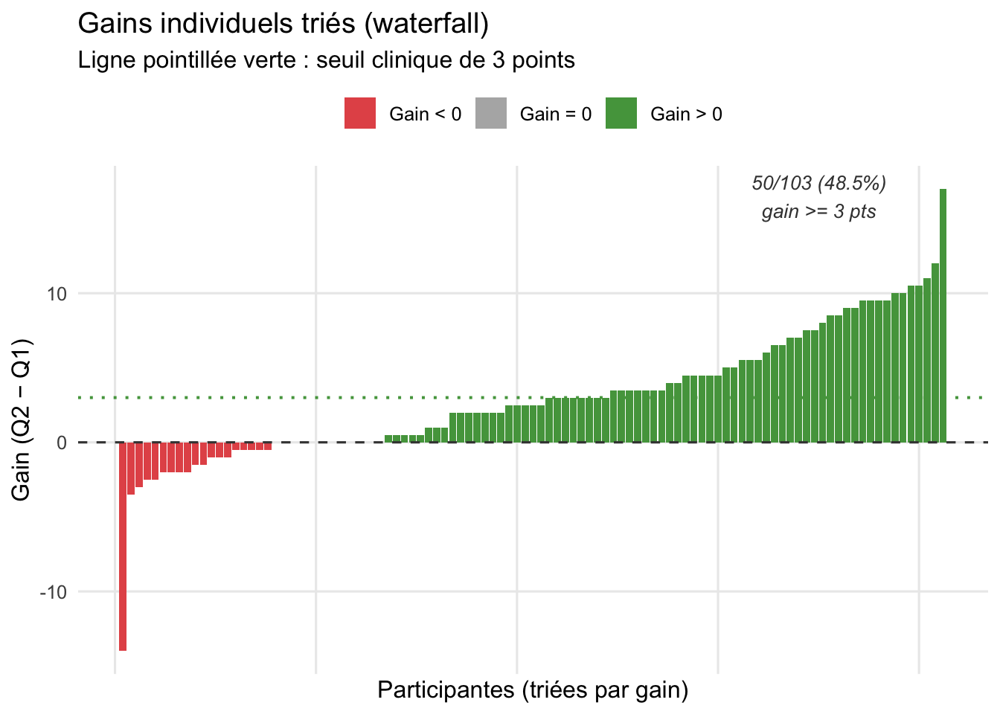
Interprétation : ce graphique montre l’ampleur et la variabilité des gains. On visualise aussi la proportion de participantes dépassant le seuil de 3 points.
4.5.7 Gain en fonction du score initial (effet plafond)
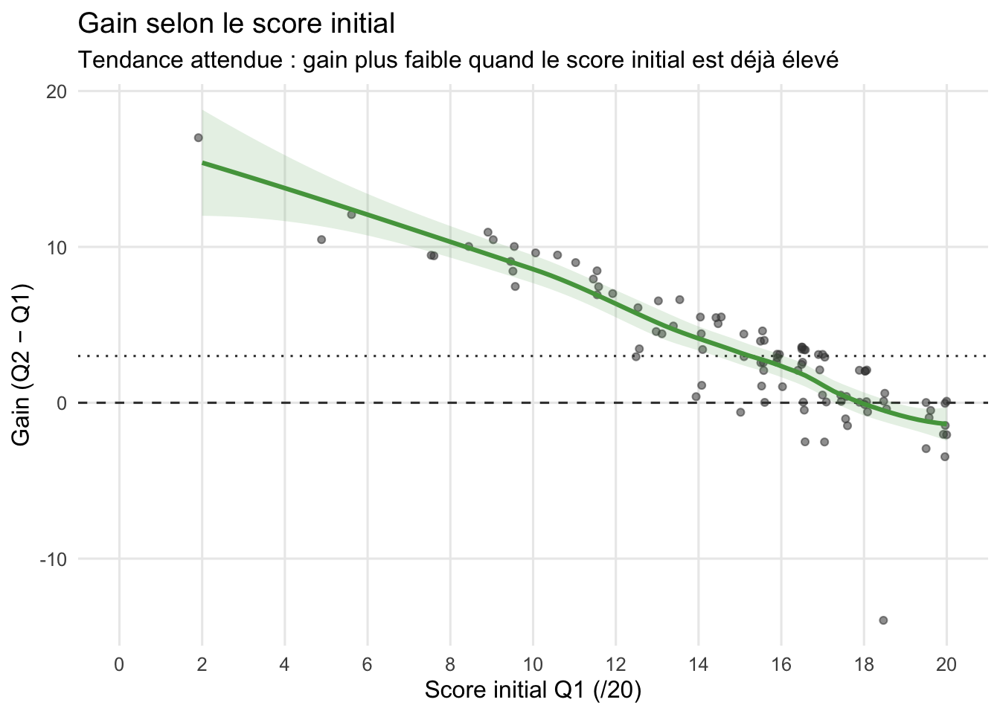
Interprétation : si la courbe diminue quand le score initial augmente, cela illustre l’effet plafond (moins de marge pour progresser quand on est déjà proche de 20/20).
4.5.8 Analyse et interprétation (avant/après)
Sur les participantes appariées (\(n = 103\)), le score moyen passe de 15.26 (avant) à 18.22 (après), soit un gain moyen de 2.97 points.
Pourquoi on compare Q2 à la moyenne Q1 appariée (et pas à la moyenne Q1 “totale”) :
- Pour mesurer un effet “avant/après”, il faut comparer les mêmes personnes au temps 1 et au temps 2.
- La moyenne Q2 est calculée uniquement chez les participantes qui ont un Q2 (donc les appariées).
- Si on compare la moyenne Q2 (appariées) à la moyenne Q1 “totale” (appariées + non appariées), on compare en réalité deux groupes différents. La différence mélange alors l’effet potentiel de l’information avec un biais de sélection (par exemple : les participantes qui répondent au Q2 peuvent être, au départ, plus informées ou plus motivées).
- Dans ces données, cela se voit : la moyenne Q1 avant appariement (13,88/20) est différente de la moyenne Q1 chez les appariées (15,26/20). Utiliser la moyenne Q1 “totale” pour estimer le gain donnerait donc un gain artificiellement plus grand, qui ne correspond pas à une comparaison avant/après sur les mêmes personnes.
- On pourrait aussi être tenté d’utiliser la moyenne Q2 “totale” (toutes les répondantes au Q2, 18,19/20 sur 106 réponses, min = 4,50, max = 20,00), mais cela ne règle pas le problème : le calcul d’un gain nécessite de disposer de Q1 et Q2 pour la même personne.
Avec un seuil de pertinence clinique fixé à 3 points, le gain moyen est très légèrement en dessous de ce seuil (gain moyen = 2.97, IC95% bilatéral = [2.13 ; 3.81]).
4.5.9 Test statistique (test t apparié / Student)
Le test principal ci-dessous est un test t apparié (Student) qui compare la moyenne des différences à 0 (après - avant). Par défaut, le test est unilatéral (après > avant).
On teste l’hypothèse d’une amélioration des scores après information.
Interprétation (t-test apparié, données observées) : le gain moyen est de 2.97 points. Le test t apparié est statistiquement significatif (p = < 1e-4), en faveur d’une augmentation après intervention.
Interprétation (IC95% du gain moyen) : l’IC95% bilatéral du gain moyen est [2.13, 3.81] points.
4.5.10 Tableau de synthèse (analyse principale)
Ce tableau résume les résultats principaux sur l’échantillon apparié. Les tests sont rapportés en bilatéral (lecture standard) et en unilatéral (après > avant, cohérent avec l’hypothèse attendue).
| n (paires) | Moyenne Q1 (/20) | Moyenne Q2 (/20) | Gain moyen (Q2−Q1) | IC95% gain (bilatéral) | p t-test (bilatéral) | p t-test (unilatéral) |
|---|---|---|---|---|---|---|
| 103 | 15.26 | 18.22 | 2.97 | [2.13 ; 3.81] | < 1e-4 | < 1e-4 |
| n (paires) | Q1 (moyenne ± SD) | Q2 (moyenne ± SD) | Gain moyen | IC95% gain | p t-test (bilat.) |
|---|---|---|---|---|---|
| 103 | 15.26 ± 3.77 | 18.22 ± 2.05 | 2.97 | [2.13 ; 3.81] | < 1e-4 |
4.5.11 Taille d’effet : d de Cohen
NoteQu’est-ce que le d de Cohen ?
Le d de Cohen est un indicateur de taille d’effet qui quantifie l’ampleur d’une différence entre deux mesures, indépendamment de la taille de l’échantillon. Contrairement à la p-value (qui dit seulement si l’effet est “probablement réel”), le d de Cohen dit à quel point l’effet est grand.
Calcul : pour des données appariées, \(d = \frac{\bar{x}_{\text{gain}}}{\text{SD}_{\text{gain}}}\), c’est-à-dire le gain moyen divisé par l’écart-type des gains.
Interprétation (conventions de Cohen, 1988) :
| d | Interprétation |
|---|---|
| < 0,2 | Effet négligeable |
| 0,2 – 0,5 | Effet petit |
| 0,5 – 0,8 | Effet moyen |
| > 0,8 | Effet grand |
Ces seuils sont des repères conventionnels ; l’interprétation doit toujours tenir compte du contexte (ici, un QCM de connaissances avec effet plafond).
| d de Cohen | IC95% | Interprétation | Gain moyen | SD du gain |
|---|---|---|---|---|
| 0.691 | [0.476 ; 0.906] | Effet moyen | 2.97 | 4.29 |
Interprétation : le d de Cohen est de 0.69 (IC95% : [0.48 ; 0.91]), ce qui correspond à un effet moyen selon les conventions de Cohen. Cela signifie que le gain moyen représente environ 0.69 écart-type de la variabilité interindividuelle des gains. Dans le contexte d’une intervention éducative sur les connaissances (avec un effet plafond notable), cet effet moyen est à interpréter en tenant compte du fait que les scores initiaux étaient déjà élevés, limitant mécaniquement la marge de progression.
4.5.12 Gain relatif (% de la marge de progression possible)
NotePourquoi le gain relatif ?
Le gain brut (Q2 − Q1) ne tient pas compte de la marge de progression de chaque participante. Une personne à 18/20 ne peut gagner que 2 points au maximum, alors qu’une personne à 10/20 peut en gagner 10. Le gain relatif exprime le gain réel en pourcentage de la marge théoriquement disponible : \(\text{Gain relatif} = \frac{\text{Q2} - \text{Q1}}{20 - \text{Q1}} \times 100\). Cet indicateur neutralise l’effet plafond.
| n | Gain relatif moyen | Médiane | IQR |
|---|---|---|---|
| 91 | 34.9% | 75% | [16.7% ; 94.7%] |
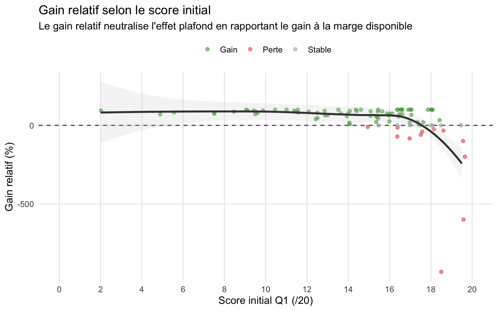
Interprétation : en moyenne, les participantes ont comblé 34.9% de leur marge de progression théorique (médiane : 75%). Ce chiffre est plus informatif que le gain brut car il tient compte du fait que les participantes avec un score initial élevé avaient mécaniquement moins de marge pour s’améliorer.
4.5.13 Distribution des gains (Q2 − Q1)

Interprétation : cette distribution aide à visualiser l’hétérogénéité des réponses individuelles (certaines participantes progressent beaucoup, d’autres peu, et quelques-unes diminuent). Les barres vertes (gains), grises (stabilité) et rouges (pertes) permettent de voir immédiatement la répartition. La ligne pleine indique la moyenne, la ligne pointillée verte le seuil clinique de 3 points.
4.5.14 Proportion améliorée / stable / diminuée
| tendance | n | p |
|---|---|---|
| Diminution | 19 | 18.4% |
| Stable | 14 | 13.6% |
| Amélioration | 70 | 68.0% |

Interprétation : ce graphique répond à une question simple : “combien de participantes s’améliorent, restent stables ou diminuent ?” (sans tenir compte de l’ampleur).
4.5.15 Courbe ECDF des gains (Q2 − Q1)
La courbe ECDF montre, pour chaque valeur x, la proportion de participantes ayant un gain <= x. On peut lire directement la proportion avec un gain >= 3 en regardant ce qu’il reste au-dessus de x = 3.

4.5.16 Bootstrap (1000 repiquages) du gain moyen
Objectif : estimer l’incertitude du gain moyen sans s’appuyer sur l’hypothèse de normalité (repiquage des participantes appariées).
| n | B (réplications) | Gain moyen observé | IC95% (2,5%) | IC95% (97,5%) |
|---|---|---|---|---|
| 103 | 1000 | 2.97 | 2.16 | 3.74 |
Interprétation (bootstrap, 1000 réplications) : l’IC95% bootstrap du gain moyen est [2.16, 3.74]. Cet intervalle est compatible avec un gain moyen > 0 et montre que le gain moyen est plutôt autour de 2–3 points.
4.5.17 Densités (avant bootstrap) et densités des moyennes (bootstrap)
Le premier graphique représente la distribution des scores individuels observés. Le second représente la distribution bootstrap des moyennes (après 1000 repiquages). La ligne verticale pointillée correspond à la moyenne observée.

Interprétation (densités observées) : la densité “Après (Q2)” est globalement décalée vers la droite par rapport à “Avant (Q1)”, ce qui est cohérent avec un gain global. Le recouvrement entre courbes reflète l’hétérogénéité interindividuelle.

Interprétation (densités bootstrap des moyennes) : ces courbes décrivent l’incertitude sur la moyenne de Q1 et Q2. Si la moyenne bootstrap de Q2 est nettement au-dessus de celle de Q1, l’amélioration moyenne est robuste aux hypothèses de normalité.
4.5.18 Résumé des gains
| n | Moy. Q1 | Moy. Q2 | Gain moy. | SD gain | Médiane gain | IQR gain | % améliorées |
|---|---|---|---|---|---|---|---|
| 103 | 15.26 | 18.22 | 2.97 | 4.29 | 2.5 | 5.25 | 81.6% |
4.5.19 Pertinence clinique : proportion avec gain >= 3 points
Interprétation (proportion avec gain >= 3) : 50/103 participantes (48.5%) atteignent au moins 3 points. IC95% de cette proportion : [0.386, 0.586].
Note : la sortie binom.test affiche aussi une p-value (test contre une proportion de 0,5 par défaut). Ici, cette p-value n’est pas l’objectif principal ; l’intérêt est surtout l’estimation de la proportion et son IC95%.
4.5.20 Probabilité d’un gain >= 3 points selon le score initial
NoteObjectif de cette analyse
Cette section vise à quantifier l’effet plafond. On s’attend à ce qu’il soit plus difficile d’obtenir un gros gain (>= 3 points) si le score de départ est déjà élevé. Le modèle de régression logistique estime la probabilité que cela arrive, en fonction du score de départ. Le graphique qui suit est la visualisation de cette probabilité.
Objectif : estimer, à partir des données, la probabilité d’obtenir un gain d’au moins 3 points (Q2 − Q1 >= 3) en fonction du score initial, puis donner une estimation pour un score initial égal à la moyenne observée au Q1 dans l’échantillon apparié (15,26/20).
Explication simple : on définit “répondeur” = 1 si la participante gagne au moins 3 points, sinon 0. On ajuste ensuite une régression logistique pour relier la probabilité d’être répondeur au score initial. Le modèle sert à résumer la tendance globale (une courbe) et à lire la probabilité pour un score initial donné.
| Score initial (Q1, /20) | Probabilité estimée (gain >= 3) | IC95% bas | IC95% haut |
|---|---|---|---|
| 15.26 | 64.1% | 46.6% | 78.5% |
Analyse complémentaire (exploratoire) : on ajuste aussi un modèle “complet” (score initial + âge + langue) et un modèle “âge seul” (score initial + âge) pour vérifier si l’âge et/ou la langue apportent une information supplémentaire sur la probabilité d’un gain >= 3 points, à score initial comparable.
| Variable | OR | IC95% bas | IC95% haut | p |
|---|---|---|---|---|
| Score initial (Q1) (par +1 point) | 0.3352401 | 0.2131620 | 0.5272324 | < 1e-4 |
| Âge (par +1 an) | 1.0399252 | 0.9664946 | 1.1189347 | 0.2947 |
| Langue: Créole (vs Français) | 0.4732596 | 0.0618763 | 3.6197183 | 0.4711 |
Interprétation (modèle complet) : dans ces données, on n’observe pas d’effet clair de l’âge ni de la langue du questionnaire (IC95% des OR recouvrant 1 et p > 0,05). En revanche, le score initial est fortement associé à la probabilité d’un gain >= 3 : plus le score de départ est élevé, plus la probabilité d’un “gros gain” diminue (effet plafond). Concrètement, l’OR associé au score initial est d’environ 0.34 par +1 point : cela correspond à une baisse d’environ 66% des “chances” (odds) d’atteindre un gain >= 3 pour chaque point supplémentaire au score initial.
| Variable | OR | IC95% bas | IC95% haut | p |
|---|---|---|---|---|
| Score initial (Q1) (par +1 point) | 0.3371868 | 0.2140457 | 0.5311713 | < 1e-4 |
| Âge (par +1 an) | 1.0379970 | 0.9646531 | 1.1169174 | 0.3185 |
Interprétation (modèle âge seul) : ce modèle permet d’évaluer l’association entre l’âge et la probabilité d’un gain >= 3, sans tenir compte de la langue. Si l’effet de l’âge est proche de 1 et non significatif, cela suggère une faible influence de l’âge dans ces données.

Interprétation : globalement, la courbe est décroissante : quand le score initial augmente, la probabilité d’obtenir un gain >= 3 diminue (effet plafond). Pour un score initial égal à la moyenne du Q1 dans l’échantillon apparié (15,26/20), la probabilité estimée est d’environ 64.1% (IC95% : [46.6%, 78.5%]).
4.5.21 Test de signe (proportion de paires améliorées)
Le test de signe compare le nombre de paires où le score augmente vs diminue (les égalités sont ignorées).
Interprétation (test de signe) : test statistiquement significatif (p = < 1e-4). Cela indique que les améliorations (gain > 0) sont plus fréquentes que les diminutions (gain < 0), indépendamment de l’amplitude des variations.
4.6 Exploration : gain global selon l’âge
| Characteristic | N | Moins de 18 ans N = 11 |
Entre 18 et 24 ans N = 251 |
Entre 25 et 29 ans N = 221 |
Entre 30 et 34 ans N = 231 |
Entre 35 et 39 ans N = 171 |
Entre 40 et 44 ans N = 41 |
Entre 45 et 49 ans N = 81 |
50 ans et plus N = 31 |
Inconnu N = 01 |
|---|---|---|---|---|---|---|---|---|---|---|
| score_pre | 103 | 14.00 ± NA | 15.60 ± 3.80 | 14.84 ± 3.73 | 16.61 ± 2.54 | 14.94 ± 4.02 | 13.63 ± 4.66 | 14.06 ± 3.28 | 12.67 ± 9.45 | NA ± NA |
| score_post | 103 | 18.50 ± NA | 18.54 ± 1.22 | 18.23 ± 1.53 | 17.87 ± 2.04 | 18.97 ± 1.27 | 14.75 ± 6.96 | 18.19 ± 1.51 | 18.67 ± 0.58 | NA ± NA |
| score_diff | 103 | 4.50 ± NA | 2.94 ± 4.01 | 3.39 ± 3.88 | 1.26 ± 2.72 | 4.03 ± 3.94 | 1.13 ± 10.36 | 4.13 ± 3.92 | 6.00 ± 9.85 | NA ± NA |
| 1 Mean ± SD | ||||||||||
Interprétation (stratifié par âge) : ces moyennes (± SD) permettent de comparer le niveau initial, le niveau après intervention et le gain moyen selon la tranche d’âge, avant de formaliser la comparaison par tests.
4.6.1 Répondeurs (gain >= 3) selon l’âge (exploratoire)
| Âge | n | Répondeurs (gain >= 3) | IC95% |
|---|---|---|---|
| Moins de 18 ans | 1 | 1/1 (100.0%) | [20.7% ; 100.0%] |
| Entre 18 et 24 ans | 25 | 11/25 (44.0%) | [26.7% ; 62.9%] |
| Entre 25 et 29 ans | 22 | 11/22 (50.0%) | [30.7% ; 69.3%] |
| Entre 30 et 34 ans | 23 | 7/23 (30.4%) | [15.6% ; 50.9%] |
| Entre 35 et 39 ans | 17 | 10/17 (58.8%) | [36.0% ; 78.4%] |
| Entre 40 et 44 ans | 4 | 3/4 (75.0%) | [30.1% ; 95.4%] |
| Entre 45 et 49 ans | 8 | 5/8 (62.5%) | [30.6% ; 86.3%] |
| 50 ans et plus | 3 | 2/3 (66.7%) | [20.8% ; 93.9%] |

Interprétation : ces proportions (avec IC95%) permettent de voir si un “gros gain” (>= 3 points) semble plus fréquent dans certaines tranches d’âge. Résultat exploratoire.

Interprétation (gain vs âge) : ce boxplot compare la distribution des gains par tranche d’âge. Un écart de médiane ou une dispersion très différente suggère des sous-groupes répondant mieux ou moins bien à l’intervention.
4.7 Score initial (Q1) selon l’âge

Interprétation (score initial vs âge) : ce boxplot aide à repérer des niveaux de connaissance initiaux différents selon l’âge, ce qui peut influencer le gain possible (“marge de progression”).
Interprétation (Kruskal–Wallis, score initial vs âge) : test non statistiquement significatif (p = 0.5373). Un résultat significatif suggère des distributions de score initial différentes selon la tranche d’âge.
Interprétation (Kruskal–Wallis, gain vs âge) : test non statistiquement significatif (p = 0.3518). Un résultat significatif suggère une réponse à l’intervention hétérogène selon l’âge.
Interprétation (modèle linéaire) : après ajustement sur le score initial, l’association globale avec l’âge est statistiquement significatif (p = < 1e-4). Le score initial est statistiquement significatif (p = < 1e-4), ce qui peut traduire un effet plafond (gain plus faible quand le score initial est déjà élevé).
4.8 Scores initiaux par question (Q1)
Boire de l’alcool pendant la grossesse nuit au bébé ?

L’alcool bu par la mère arrive jusqu’au bébé ?

Conséquences possibles sur le bébé à naître

Conséquences du SAF
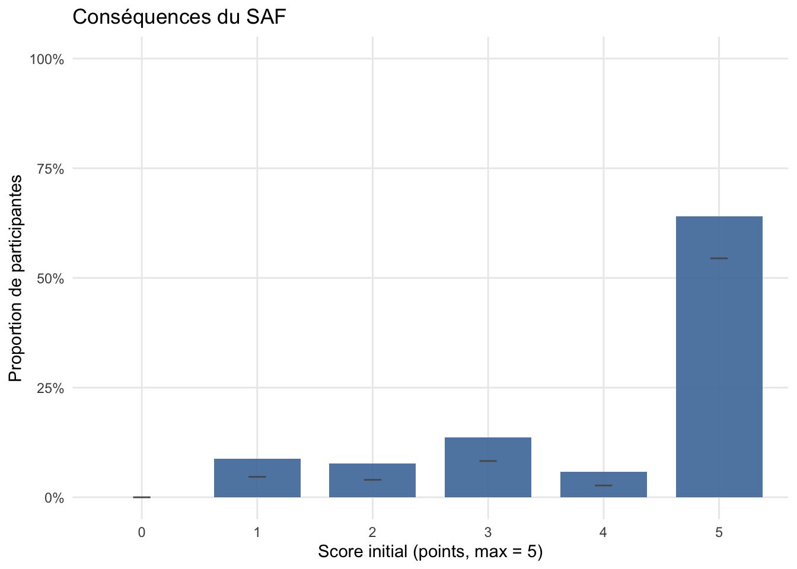
Âges possibles de détection des troubles

Quantité d’alcool risquée pendant la grossesse

Verre contenant le plus d’alcool

Place de l’homme dans la prévention

Lorsque les réponses initiales sont bonnes (quasi 100% au score maximal), il existe un probable “effet plafond” de la question, limitant la marge de progression possible.
Vue d’ensemble des 8 questions sur un seul graphique facetté :
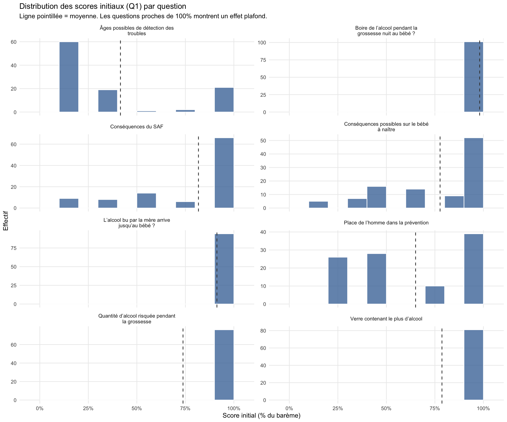
Représentons tous les scores sur un même graphique pour mieux visualiser les différences entre questions, avec un barème normalisé (0–100%).
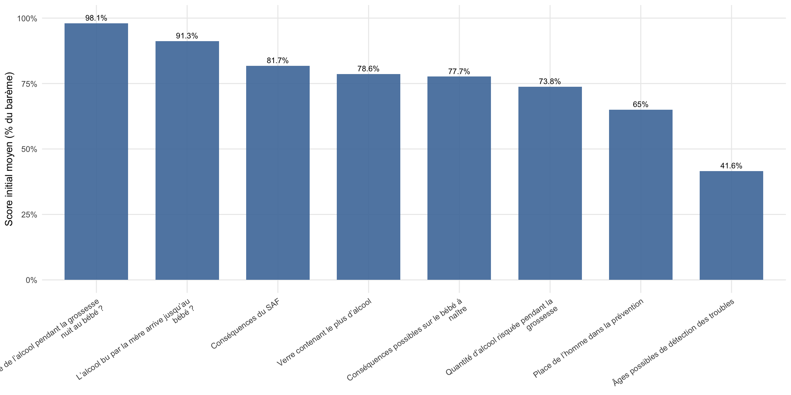
5 Analyse par question
Cette section explore l’évolution par question (scores en points et en % du barème) à partir des scores par question déjà calculés plus haut.
Important : ces analyses “par question” sont exploratoires. Il n’y a pas de correction pour tests multiples (demande explicite), donc on interprète surtout (i) la taille des gains (en points et en % du barème) et (ii) la cohérence avec l’effet plafond, plutôt qu’une liste stricte de p-values < 0,05.
5.1 Résultats par question
| Question | Max | n | Moy. Q1 | Moy. Q2 | Gain moy. | % max Q1 | % max Q2 |
|---|---|---|---|---|---|---|---|
| Boire de l’alcool pendant la grossesse nuit au bébé ? | 5 | 103 | 4.90 | 5.00 | 0.10 | 98.1% | 100.0% |
| Conséquences du SAF | 5 | 103 | 4.09 | 4.58 | 0.50 | 64.1% | 75.7% |
| Conséquences possibles sur le bébé à naître | 6 | 103 | 4.66 | 5.09 | 0.43 | 50.5% | 62.1% |
| L’alcool bu par la mère arrive jusqu’au bébé ? | 5 | 103 | 4.56 | 4.95 | 0.39 | 91.3% | 99.0% |
| Place de l’homme dans la prévention | 4 | 103 | 2.60 | 3.43 | 0.83 | 37.9% | 64.1% |
| Quantité d’alcool risquée pendant la grossesse | 5 | 103 | 3.69 | 4.85 | 1.17 | 73.8% | 97.1% |
| Verre contenant le plus d’alcool | 5 | 103 | 3.93 | 4.81 | 0.87 | 78.6% | 96.1% |
| Âges possibles de détection des troubles | 5 | 103 | 2.08 | 3.74 | 1.66 | 20.4% | 57.3% |
Interprétation (résumé par question) : la comparaison des moyennes (en points) et des proportions au score maximal (“full score”) permet d’identifier des questions déjà très bien réussies avant (effet plafond) versus celles ayant une marge de progression importante.
5.2 Exploration par âge : gain par question (% du barème)

Interprétation (âge × question) : ces points (± IC95%) comparent les gains moyens par tranche d’âge pour chaque question, afin de repérer des items où certains groupes progressent davantage.
| Question | n | p (Kruskal-Wallis) |
|---|---|---|
| Boire de l’alcool pendant la grossesse nuit au bébé ? | 103 | 0.0135 |
| L’alcool bu par la mère arrive jusqu’au bébé ? | 103 | 0.0464 |
| Place de l’homme dans la prévention | 103 | 0.2229 |
| Quantité d’alcool risquée pendant la grossesse | 103 | 0.2430 |
| Conséquences possibles sur le bébé à naître | 103 | 0.3164 |
| Âges possibles de détection des troubles | 103 | 0.3417 |
| Conséquences du SAF | 103 | 0.7115 |
| Verre contenant le plus d’alcool | 103 | 0.7645 |
Interprétation (âge × questions) : 2 question(s) montrent une hétérogénéité des gains selon l’âge (p < 0.05). Résultat exploratoire, sans correction pour multiplicité.
5.3 Synthèse des gains par question
Pour avoir une vue d’ensemble, le graphique suivant représente le gain moyen pour chaque question, exprimé en pourcentage du barème maximum de la question. Les questions sont triées de celle qui a le plus progressé à celle qui a le moins progressé.

Interprétation : Ce graphique synthétise l’impact de l’intervention sur chaque connaissance spécifique. On voit immédiatement que les questions sur Âges possibles de détection des troubles et Quantité d’alcool risquée pendant la grossesse ont montré la plus forte progression, tandis que d’autres, probablement déjà bien maîtrisées au départ, ont peu évolué.
5.4 Tests par question (appariés)
Pour chaque item, on teste si le score augmente après intervention (unilatéral : après > avant). Pour les questions à score binaire, cela correspond à une amélioration du taux de “bonne réponse”.
| Question | n | p (t-test) | p (McNemar) |
|---|---|---|---|
| Boire de l’alcool pendant la grossesse nuit au bébé ? | 103 | 0.0792 | NA |
| Conséquences du SAF | 103 | 0.0015 | 0.0973 |
| Conséquences possibles sur le bébé à naître | 103 | 0.0248 | 0.1416 |
| L’alcool bu par la mère arrive jusqu’au bébé ? | 103 | 0.0054 | 0.0269 |
| Place de l’homme dans la prévention | 103 | < 1e-4 | 0.0001 |
| Quantité d’alcool risquée pendant la grossesse | 103 | < 1e-4 | < 1e-4 |
| Verre contenant le plus d’alcool | 103 | 0.0001 | 0.0009 |
| Âges possibles de détection des troubles | 103 | < 1e-4 | < 1e-4 |
Interprétation (tests par question) : 7 question(s) sont significativement améliorées (t-test apparié), résultats exploratoires sans correction pour multiplicité.
5.5 Graphique : score moyen par question (avant vs après)

5.5.1 Version enrichie (avec valeur du gain)
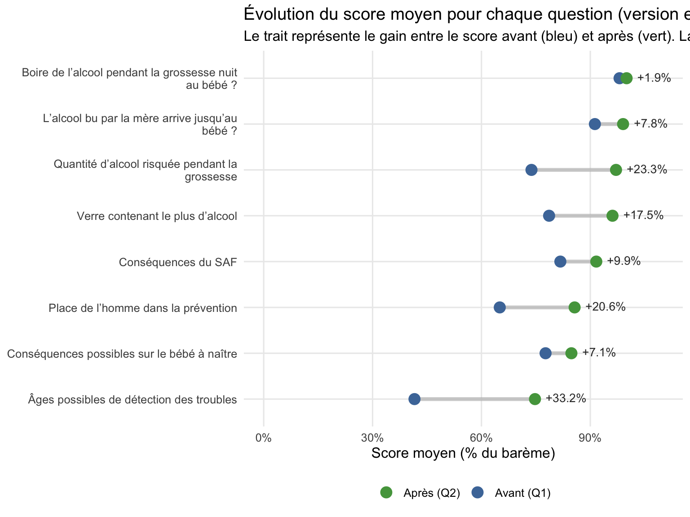
Interprétation (moyennes par question) : les barres représentent la moyenne exprimée en % du barème (avec IC95%). Les plus fortes progressions moyennes concernent notamment : Âges possibles de détection des troubles; Quantité d’alcool risquée pendant la grossesse; Place de l’homme dans la prévention.
5.6 Effet plafond par question : proportion au score maximal
Idée : si une question est déjà très souvent au score maximal au Q1, il reste peu de marge de progression au Q2 (effet plafond).
| Item | Question | Barème max |
|---|---|---|
| Q1 | Boire de l’alcool pendant la grossesse nuit au bébé ? | 5 |
| Q2 | L’alcool bu par la mère arrive jusqu’au bébé ? | 5 |
| Q3 | Conséquences possibles sur le bébé à naître | 6 |
| Q4 | Conséquences du SAF | 5 |
| Q5 | Âges possibles de détection des troubles | 5 |
| Q6 | Quantité d’alcool risquée pendant la grossesse | 5 |
| Q7 | Verre contenant le plus d’alcool | 5 |
| Q8 | Place de l’homme dans la prévention | 4 |
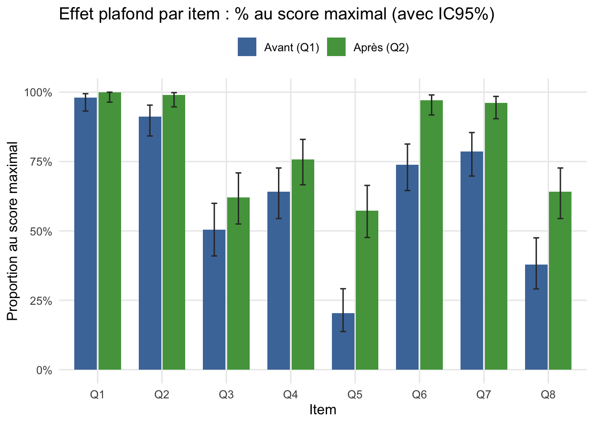
Interprétation : si l’item est déjà très souvent “au maximum” au Q1, la hausse possible au Q2 est mécaniquement limitée (effet plafond).
5.7 Distribution des scores par question (1 graphique par question)
Abscisse = score en points (0 à barème max) ; ordonnée = % de participantes (avec IC95%).
Boire de l’alcool pendant la grossesse nuit au bébé ?
 Interprétation : moyenne 4.90/5 (Q1) vs 5.00/5 (Q2), soit 1.9% du barème en moyenne. Proportion au score maximal : 98.1% (Q1) vs 100.0% (Q2). Tests appariés : t-test non statistiquement significatif (p = 0.0792). Astérisques (McNemar, p < 0,05) : 0 niveau(x) de score avec différence de proportion.
Interprétation : moyenne 4.90/5 (Q1) vs 5.00/5 (Q2), soit 1.9% du barème en moyenne. Proportion au score maximal : 98.1% (Q1) vs 100.0% (Q2). Tests appariés : t-test non statistiquement significatif (p = 0.0792). Astérisques (McNemar, p < 0,05) : 0 niveau(x) de score avec différence de proportion.
L’alcool bu par la mère arrive jusqu’au bébé ?
 Interprétation : moyenne 4.56/5 (Q1) vs 4.95/5 (Q2), soit 7.8% du barème en moyenne. Proportion au score maximal : 91.3% (Q1) vs 99.0% (Q2). Tests appariés : t-test statistiquement significatif (p = 0.0054). Astérisques (McNemar, p < 0,05) : 2 niveau(x) de score avec différence de proportion.
Interprétation : moyenne 4.56/5 (Q1) vs 4.95/5 (Q2), soit 7.8% du barème en moyenne. Proportion au score maximal : 91.3% (Q1) vs 99.0% (Q2). Tests appariés : t-test statistiquement significatif (p = 0.0054). Astérisques (McNemar, p < 0,05) : 2 niveau(x) de score avec différence de proportion.
Conséquences possibles sur le bébé à naître
 Interprétation : moyenne 4.66/6 (Q1) vs 5.09/6 (Q2), soit 7.1% du barème en moyenne. Proportion au score maximal : 50.5% (Q1) vs 62.1% (Q2). Tests appariés : t-test statistiquement significatif (p = 0.0248). Astérisques (McNemar, p < 0,05) : 0 niveau(x) de score avec différence de proportion.
Interprétation : moyenne 4.66/6 (Q1) vs 5.09/6 (Q2), soit 7.1% du barème en moyenne. Proportion au score maximal : 50.5% (Q1) vs 62.1% (Q2). Tests appariés : t-test statistiquement significatif (p = 0.0248). Astérisques (McNemar, p < 0,05) : 0 niveau(x) de score avec différence de proportion.
Conséquences du SAF
 Interprétation : moyenne 4.09/5 (Q1) vs 4.58/5 (Q2), soit 9.9% du barème en moyenne. Proportion au score maximal : 64.1% (Q1) vs 75.7% (Q2). Tests appariés : t-test statistiquement significatif (p = 0.0015). Astérisques (McNemar, p < 0,05) : 1 niveau(x) de score avec différence de proportion.
Interprétation : moyenne 4.09/5 (Q1) vs 4.58/5 (Q2), soit 9.9% du barème en moyenne. Proportion au score maximal : 64.1% (Q1) vs 75.7% (Q2). Tests appariés : t-test statistiquement significatif (p = 0.0015). Astérisques (McNemar, p < 0,05) : 1 niveau(x) de score avec différence de proportion.
Âges possibles de détection des troubles
 Interprétation : moyenne 2.08/5 (Q1) vs 3.74/5 (Q2), soit 33.2% du barème en moyenne. Proportion au score maximal : 20.4% (Q1) vs 57.3% (Q2). Tests appariés : t-test statistiquement significatif (p = < 1e-4). Astérisques (McNemar, p < 0,05) : 4 niveau(x) de score avec différence de proportion.
Interprétation : moyenne 2.08/5 (Q1) vs 3.74/5 (Q2), soit 33.2% du barème en moyenne. Proportion au score maximal : 20.4% (Q1) vs 57.3% (Q2). Tests appariés : t-test statistiquement significatif (p = < 1e-4). Astérisques (McNemar, p < 0,05) : 4 niveau(x) de score avec différence de proportion.
Quantité d’alcool risquée pendant la grossesse
 Interprétation : moyenne 3.69/5 (Q1) vs 4.85/5 (Q2), soit 23.3% du barème en moyenne. Proportion au score maximal : 73.8% (Q1) vs 97.1% (Q2). Tests appariés : t-test statistiquement significatif (p = < 1e-4). Astérisques (McNemar, p < 0,05) : 2 niveau(x) de score avec différence de proportion.
Interprétation : moyenne 3.69/5 (Q1) vs 4.85/5 (Q2), soit 23.3% du barème en moyenne. Proportion au score maximal : 73.8% (Q1) vs 97.1% (Q2). Tests appariés : t-test statistiquement significatif (p = < 1e-4). Astérisques (McNemar, p < 0,05) : 2 niveau(x) de score avec différence de proportion.
Verre contenant le plus d’alcool
 Interprétation : moyenne 3.93/5 (Q1) vs 4.81/5 (Q2), soit 17.5% du barème en moyenne. Proportion au score maximal : 78.6% (Q1) vs 96.1% (Q2). Tests appariés : t-test statistiquement significatif (p = 0.0001). Astérisques (McNemar, p < 0,05) : 2 niveau(x) de score avec différence de proportion.
Interprétation : moyenne 3.93/5 (Q1) vs 4.81/5 (Q2), soit 17.5% du barème en moyenne. Proportion au score maximal : 78.6% (Q1) vs 96.1% (Q2). Tests appariés : t-test statistiquement significatif (p = 0.0001). Astérisques (McNemar, p < 0,05) : 2 niveau(x) de score avec différence de proportion.
Place de l’homme dans la prévention
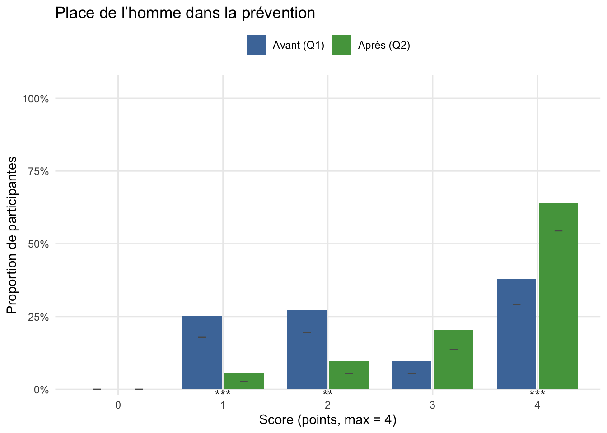 Interprétation : moyenne 2.60/4 (Q1) vs 3.43/4 (Q2), soit 20.6% du barème en moyenne. Proportion au score maximal : 37.9% (Q1) vs 64.1% (Q2). Tests appariés : t-test statistiquement significatif (p = < 1e-4). Astérisques (McNemar, p < 0,05) : 3 niveau(x) de score avec différence de proportion.
5.8 Vue d’ensemble : distribution Q1 vs Q2 (facettes)
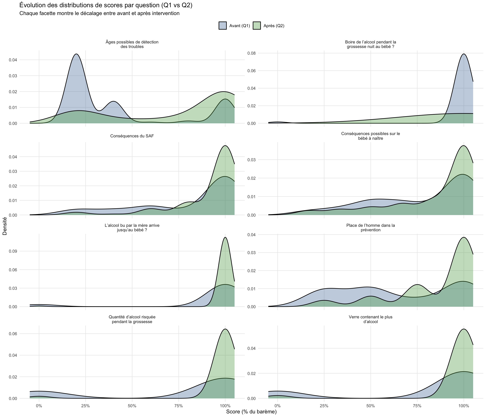
Interprétation : cette vue d’ensemble permet de comparer visuellement les 8 questions sur un seul graphique. Un décalage de la densité vers la droite (vert vs bleu) indique une progression après l’intervention.
5.9 Forest plot récapitulatif (gain global + par question)
Ce graphique de type “forest plot” résume sur un seul graphique le gain moyen global et les gains par question (avec IC95%), permettant une comparaison immédiate.
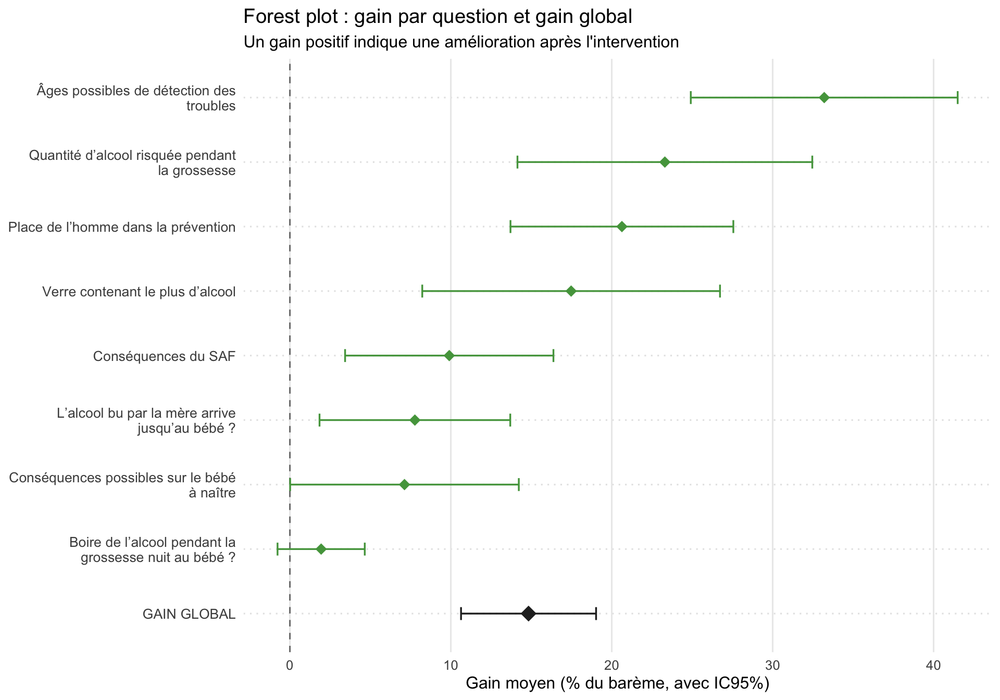
Interprétation : ce forest plot récapitule l’ensemble des résultats. Le losange noir en bas représente le gain global, tandis que les points verts montrent les gains par question. Les questions dont l’IC95% ne croise pas zéro sont celles où l’amélioration est statistiquement significative (à titre exploratoire, sans correction pour multiplicité).
6 Résultats
6.1 Biais de sélection potentiel : Q1 appariées vs Q1 non appariées
Idée : comparer les participantes ayant répondu au premier questionnaire puis appariées aux patientes ayant répondu au 2ème questionnaire, par rapport aux patientes ayant répondu au 1er questionnaire mais n’ayant pas été appariées.
| groupe | n | mean_q1 | sd_q1 | median_q1 | iqr_q1 |
|---|---|---|---|---|---|
| Q1 appariées (ont un Q2) | 103 | 15.26 | 3.77 | 16.0 | 4.75 |
| Q1 non appariées (pas de Q2) | 69 | 11.81 | 3.89 | 12.5 | 6.00 |
| Test | t | df | p-value | IC95% diff. |
|---|---|---|---|---|
| Welch t-test (Q1 appariées vs non appariées) | -5.76 | 143 | < 1e-4 | [-4.63 ; -2.26] |
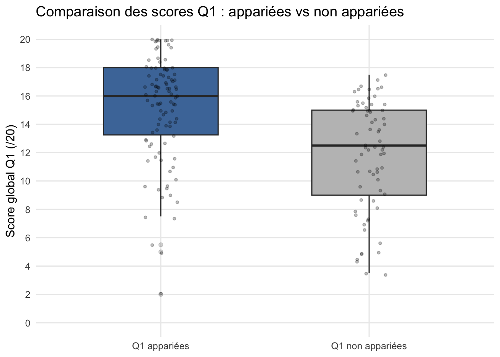
Interprétation : si le score initial Q1 est différent entre appariées et non appariées (tests ci-dessus), cela suggère un biais de sélection. Dans ce cas, utiliser la moyenne Q1 “totale” pour estimer un gain (en la comparant à la moyenne Q2) serait non valide, car cela comparerait des populations différentes.
ImportantCe que cela signifie concrètement
Les tests et le graphique confirment que les participantes qui ont répondu au Q2 (“appariées”) avaient déjà un score initial significativement plus élevé.
- Score Q1 moyen (appariées) : 15,26
- Score Q1 moyen (non appariées) : 11,81
Il serait donc méthodologiquement faux de comparer la moyenne de tous les Q2 à la moyenne de tous les Q1. La seule méthode correcte est l’analyse appariée, qui mesure l’évolution au sein de chaque personne ayant complété les deux questionnaires.
Interprétation possible (à discuter) : si les participantes non appariées avaient eu un score initial très élevé, on pourrait suspecter qu’elles avaient moins ressenti le besoin de répondre au second questionnaire. Ici, c’est plutôt l’inverse (les appariées ont un score initial moyen plus élevé), ce qui suggère plutôt que les participantes les plus informées (ou les plus motivées) ont davantage répondu au Q2.
6.2 Mise en évidence de la moyenne initiale (Q1)
| Échantillon | n | Moyenne initiale (Q1, /20) | Écart-type (Q1) | IC95% bas (Q1) | IC95% haut (Q1) |
|---|---|---|---|---|---|
| Q1 total (avant appariement) | 172 | 13.88 | 4.17 | 13.25 | 14.5 |
| Q1 apparié (paires complètes) | 103 | 15.26 | 3.77 | 14.52 | 16.0 |
Interprétation : la moyenne initiale du score global (Q1) est de 13,88/20 avant appariement, et de 15,26/20 dans l’échantillon apparié, ce qui suggère une marge de progression limitée vers 20/20 (effet plafond possible).
| Âge | Q1 | Q2 |
|---|---|---|
| Moins de 18 ans | 6 (3.5%) | 1 (1.0%) |
| Entre 18 et 24 ans | 38 (22.1%) | 25 (24.3%) |
| Entre 25 et 29 ans | 39 (22.7%) | 22 (21.4%) |
| Entre 30 et 34 ans | 34 (19.8%) | 23 (22.3%) |
| Entre 35 et 39 ans | 27 (15.7%) | 17 (16.5%) |
| Entre 40 et 44 ans | 11 (6.4%) | 4 (3.9%) |
| Entre 45 et 49 ans | 14 (8.1%) | 8 (7.8%) |
| 50 ans et plus | 3 (1.7%) | 3 (2.9%) |
Interprétation : ce tableau décrit la distribution des tranches d’âge dans l’échantillon Q1 (colonne Q1) et dans l’échantillon ayant répondu au second temps (colonne Q2).
6.3 Score global au Q2 (Q2 total)
| n (Q2) | Moyenne Q2 (/20) | Min (/20) | Max (/20) |
|---|---|---|---|
| 106 | 18.19 | 4.5 | 20 |
Interprétation : ce tableau décrit le score global observé au Q2 dans l’ensemble des répondantes au second questionnaire (n = 106). Cette moyenne ne doit pas être utilisée pour calculer un “gain avant/après”, car le Q1 correspondant n’est pas disponible pour toutes les répondantes du Q2 et la comparaison avant/après doit se faire sur des données appariées (mêmes participantes au Q1 et au Q2).
7 Discussion
7.1 Résultats principaux
TipLes 3 conclusions clés
L’intervention a fonctionné : amélioration statistiquement significative des connaissances, avec un gain moyen de 2.97 points (IC95% : [2.13 ; 3.81], d de Cohen = 0.69, effet moyen). Le message principal est positif.
L’effet est modéré par un effet plafond : le score de départ était déjà élevé (15,26/20), limitant la marge de progression. Le gain relatif moyen (34.9% de la marge disponible) est plus informatif que le gain brut.
L’effet est homogène : aucune différence significative selon l’âge (Kruskal-Wallis : p = 0.3518). L’intervention bénéficie à toutes les participantes de manière comparable.
Sur 103 participantes appariées, le score moyen passe de 15.26/20 à 18.22/20, soit un gain moyen de 2.97 point(s) (t-test apparié : p = < 1e-4). En pratique, 50/103 participantes (48.5%) ont un gain >= 3 points. L’analyse par question (exploratoire) montre que les plus fortes progressions concernent : Âges possibles de détection des troubles; Quantité d’alcool risquée pendant la grossesse; Place de l’homme dans la prévention.
7.2 Limites méthodologiques
Biais de sélection (attrition) : les participantes appariées avaient un score initial plus élevé que les non appariées, ce qui suggère un biais de sélection par motivation/engagement. L’analyse avant/après reste valide sur les paires, mais la généralisation doit être prudente. L’estimation d’un gain “avant/après” doit reposer sur les participantes ayant les deux mesures ; la moyenne Q2 “totale” (18,19/20 sur 106 réponses) reste descriptive et ne peut servir à estimer un gain.
Appariement indirect : l’appariement repose sur l’âge et la ville, sans identifiant unique. Toute erreur d’appariement tend à “diluer” l’effet mesuré.
Absence de groupe contrôle : sans groupe comparable, on ne peut pas attribuer formellement l’amélioration à la seule intervention. C’est une limite classique des études avant-après.
QCM = connaissances, pas comportements : mieux répondre au QCM ne garantit pas un changement de comportement, même si c’est un premier indicateur.
7.3 Recommandations pour une future étude
- Identifiant unique anonyme pour relier Q1 et Q2 de façon certaine et limiter les pertes au suivi.
- Groupe contrôle randomisé (information différée à un autre groupe) pour isoler l’effet de l’intervention.
- Questionnaire plus discriminant : questions plus difficiles pour limiter l’effet plafond et mieux discriminer les niveaux de connaissance.
- Critères de jugement élargis : mesurer les intentions de changement, l’auto-efficacité, et idéalement des indicateurs de comportement, avec un suivi à distance (3-6 mois).
7.4 Version thèse (paragraphe)
Dans cette étude avant-après (n = 103 paires), le score moyen au QCM augmente de 15.26/20 avant information à 18.22/20 après information, soit un gain moyen de 2.97 point(s) (d de Cohen = 0.69, effet moyen). Les tests appariés concluent à une amélioration statistiquement significative (t-test unilatéral : p = < 1e-4). L’intervalle de confiance bilatéral du gain moyen est [2.13 ; 3.81]. Au niveau individuel, 50/103 participantes (48.5%) atteignent un gain >= 3 points. Le gain relatif moyen (rapporté à la marge de progression théorique) est de 34.9%, ce qui permet de nuancer l’effet plafond observé sur le gain brut. L’analyse exploratoire par régression logistique (ajustée sur l’âge et la langue) confirme que le facteur principal est le score initial (effet plafond), sans effet clair de l’âge ni de la langue. L’analyse par question indique que les plus fortes progressions concernent : Âges possibles de détection des troubles; Quantité d’alcool risquée pendant la grossesse; Place de l’homme dans la prévention.
Plusieurs limites peuvent influencer l’interprétation : l’appariement repose sur des informations indirectes (âge, ville), l’absence de groupe contrôle empêche d’attribuer formellement l’évolution au seul message d’information, et un QCM mesure surtout des connaissances à court terme. Pour améliorer l’évaluation dans une étude future, il serait souhaitable d’utiliser un identifiant unique, d’ajouter un groupe contrôle, de renforcer la sensibilité du questionnaire et d’intégrer des critères plus proches de l’objectif clinique, avec un suivi à distance pour évaluer la persistance de l’effet.
8 Annexes techniques (détails statistiques)
Cette section regroupe des compléments “techniques” utiles pour un lecteur souhaitant vérifier certains points méthodologiques, sans alourdir l’interprétation principale.
8.1 Diagnostic visuel (gain global)

Interprétation : ce QQ-plot donne une idée de l’éloignement à la normalité. L’analyse principale ne repose pas uniquement sur la normalité car le bootstrap du gain moyen est également rapporté.